环境搭建参考
1. SDK安装使用说明¶
1.1. 安装linux服务器¶
宿主机系统建议使用64bit Ubuntu 16.04及以上。
-
默认shell配置
编译脚本默认使用的是bash，要求系统的默认shell为bash，可通过
ls -la /bin/sh命令来确认。以最常用的Ububtu为例，高版本的Ubuntu默认shell为dash，修改方式如下：# ls -la /bin/sh lrwxrwxrwx 1 root root 4 Jun 15 08:49 /bin/sh -> dash # sudo dpkg-reconfigure dash #在弹出的界面选择<NO> # ls -la /bin/sh lrwxrwxrwx 1 root root 4 Jun 15 08:49 /bin/sh -> bash
-
设置默认python版本为python2.x
可以使用
pyhton –version查看当前的版本。Ubuntu 16.04默认为2.7python2与python3的语义有差别，SDK编译脚本使用的是python2的语义，因此需要将系统默认python版本设置为python2.x，修改方式请参考网络上的相关文档，比如使用update-alternatives工具来配置。
注意： 如果使用低版本的Ubuntu，如在Ubuntu 16.04上建议进行更新源的操作，具体操作请参考网络上的相关文档，如不更新可能会导致后续的编译错误。
-
安装mkfs.ubifs工具
系统需已安装mkfs.ubifs工具，如Ubuntu可通过
sudo apt-get install mtd-utils命令安装。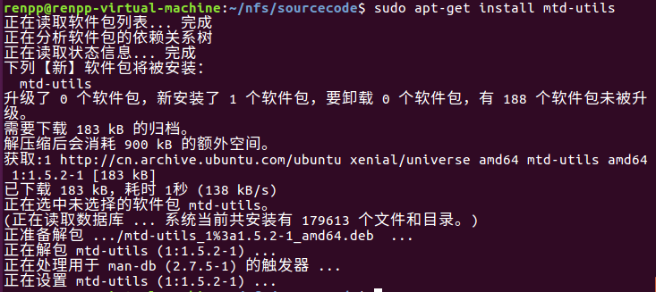
如果遇到下图问题，需要安装
sudo apt-get install bison：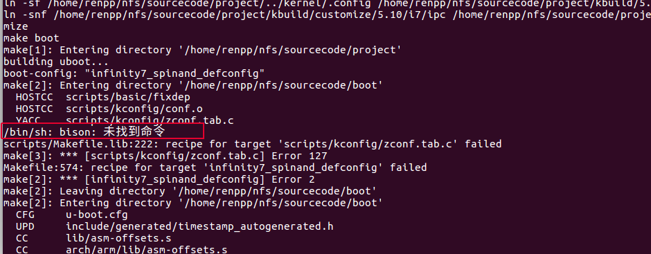
如果遇到下图问题，需要安装
sudo apt-get install flex：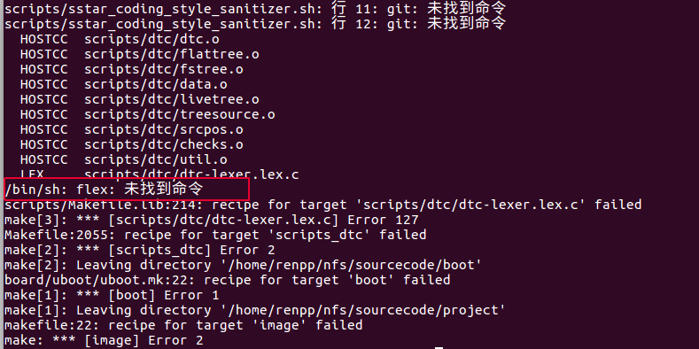
如果遇到下图问题，需要安装
sudo apt-get install libssl-dev：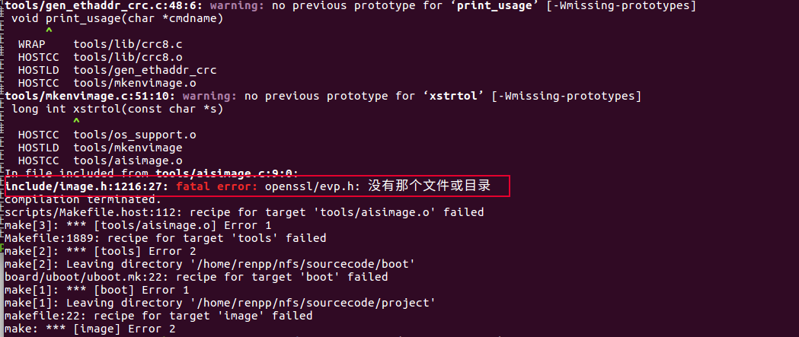
其他lib & tool：
针对SDK编译需要安装一些tool，否则会编译失败
# sudo apt-get install libc6-dev-i386 # sudo apt-get install lib32z1 lib32ncurses5 # sudo apt-get install libuuid1:i386 # sudo apt-get install cmake # sudo apt-get install libncurses5-dev libncursesw5-dev # sudo apt install bc # sudo apt-get install xz-utils # sudo apt-get install automake # sudo apt-get install libtool # sudo apt-get install libevdev-dev # sudo apt-get install pkg-config
制作文件系统相关的tool:
缺少(ubinize，mkfs.jffs2，mkfs.ubifs): apt install mtd-utils 缺少(make_ext4fs): apt install android-tools-fsutils
mksquashfs ubuntu自带有，若没有，再根据提示安装即可。
2. ToolChain配置¶
2.1. glibc ToolChain¶
export PATH=$PATH:/tools/toolchain/gcc-11.1.0-20210608-sigmastar-glibc-x86_64_arm-linux-gnueabihf/bin export CROSS_COMPILE=arm-linux-gnueabihf- export ARCH=arm
2.2. uclibc ToolChain¶
export PATH=$PATH:/tools/toolchain/arm-sigmastar-linux-uclibcgnueabihf-9.1.0/bin export CROSS_COMPILE=arm-sigmastar-linux-uclibcgnueabihf-9.1.0- export ARCH=arm
3. 编译¶
3.1. 编译project¶
FLASH:
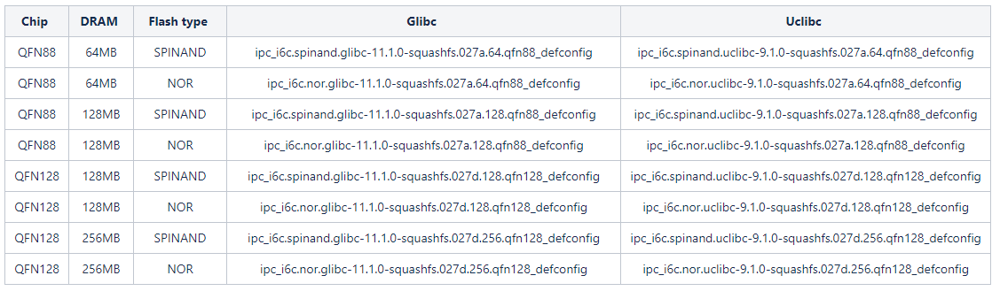
EMMC:
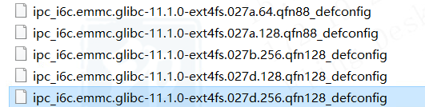
以377 DEMO BOARD为例：
编译glibc nor cd project make ipc_i6c.nor.glibc-11.1.0-squashfs.027a.64.qfn88_defconfig make clean;make image -j32
以378QE DEMO BOARD为例：
编译uclibc nand cd project make ipc_i6c.spinand.ucbc-11.1.0-squashfs.027d.256.qfn128_demo_defconfig make clean;make image -j32
以377D DEMO BOARD为例:
编译emmc cd project make ipc_i6c.emmc.glibc-11.1.0-ext4fs.027a.128.qfn88_defconfig make clean;make image -j32
注意：qfn128的config有demo board和evb board的区分，如果是demo board，请使用带demo字样的config
3.2. 编译boot¶
cd boot export PATH=$PATH:/tools/toolchain/arm-sigmastar-linux-uclibcgnueabihf-9.1.0/bin export CROSS_COMPILE=arm-sigmastar-linux-uclibcgnueabihf-9.1.0- export ARCH=arm make infinity6c_defconfig make clean; make –j32
3.3. 编译kernel¶
cd kernel export PATH=$PATH:/tools/toolchain/arm-sigmastar-linux-uclibcgnueabihf-9.1.0/bin export CROSS_COMPILE=arm-sigmastar-linux-uclibcgnueabihf-9.1.0- export ARCH=arm make infinity6c_ssc027a_s01a_defconfig make clean;make –j32
4. FLASH切换说明¶
切换FLASH一般都要配置两个地方，跳帽、拨码。
4.1. QFN88¶
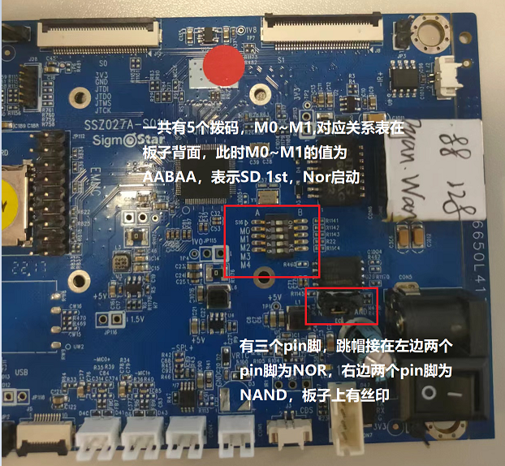
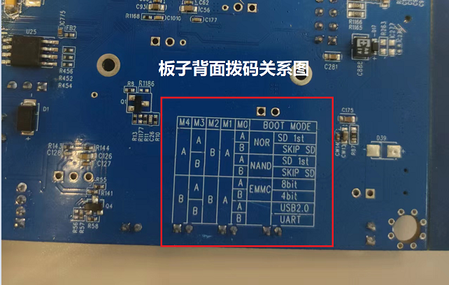
4.2. QFN128¶
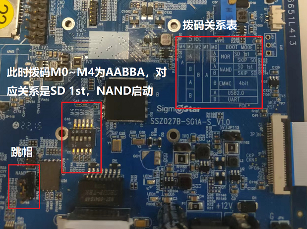
5. 烧录升级¶
5.1. 使用Flash Tool烧录¶
Flash Tool需要更新到5.0.25版本，并且.sni文件要和.exe文件处于同一路径下，不然会识别不到Flash信息，需要用到debug board。
5.1.1. 烧录
-
Spi-Nor
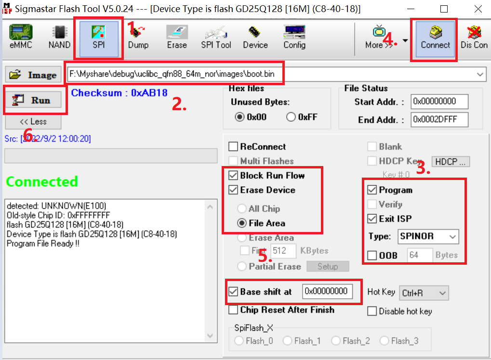
-
Spi-Nand
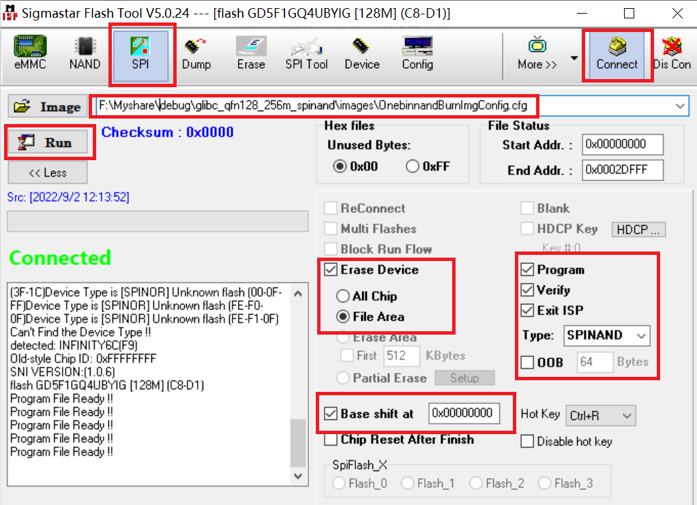
-
EMMC
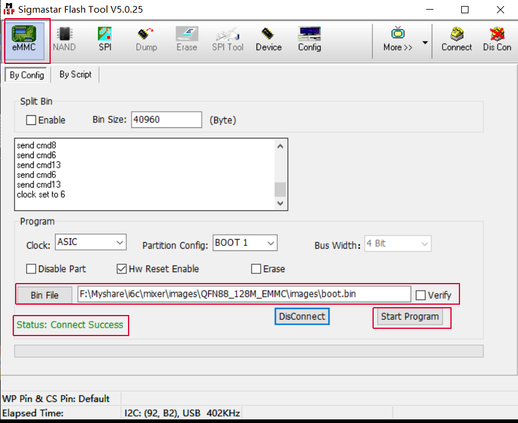
5.1.2. 升级
烧录完成后，就可以进行升级。板子上电开机后，按住回车键进入uboot：
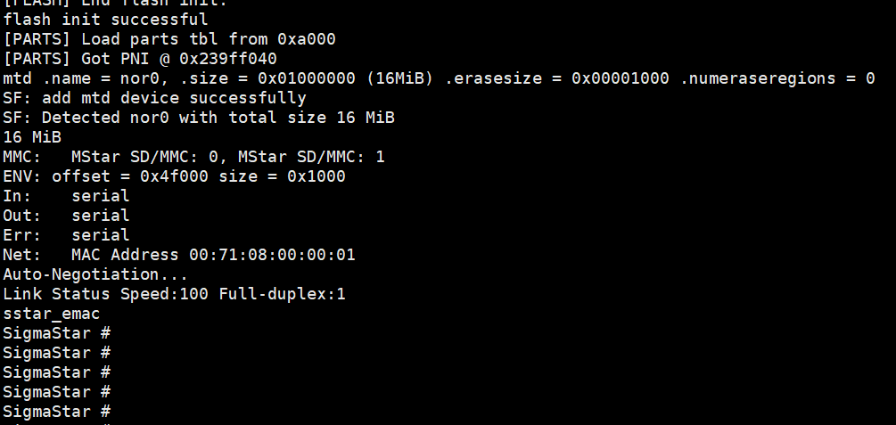
配置IP：（第一次烧录需要配置）
setenv serverip xx.xx.xx.xx setenv ipaddr xx.xx.xx.xx setenv -f ethaddr xx:xx:xx:xx:xx:xx saveenv
打开tftp工具，设置image目录，确认server ip一致。然后键入 estar 升级。升级成功后会自动重启，进入kernel。
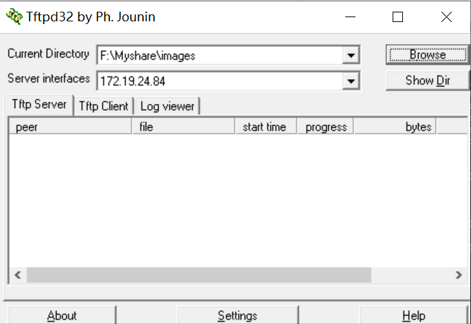
5.2. 使用UartBurn Tool烧录¶
5.2.1. 配置Uart启动
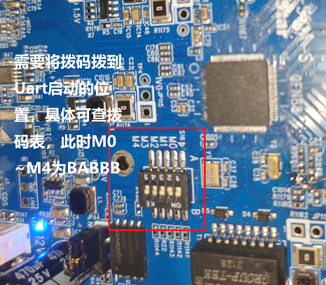
5.2.2. 烧录
板子上电，点击UartBurn Tool连接按钮，然后点击Transfer，传输开机文件。
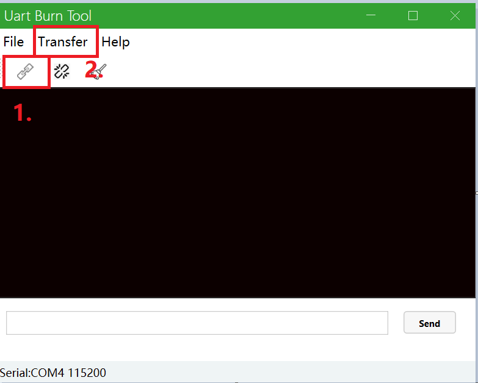
依次烧录IPL.bin、IPL_CUST.bin、u-boot.bin：
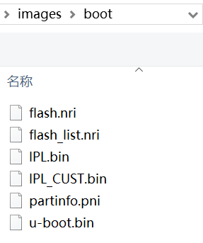
烧录完成后，板子会进入uboot。然后设置bootargs、mtdparts，以及ip：
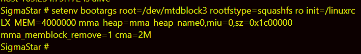
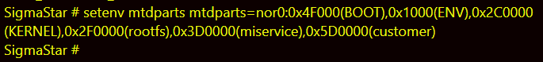
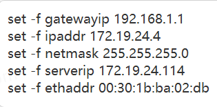
可以输入printenv查看设置的环境。然后ping一下电脑的ip，确保可以ping通。
可以ping通，就可以用tftp进行estar升级，升级步骤同Flash Tool启动的升级步骤4.1.2. 升级。
升级完成之后，就可以切到nor/spinand（取决于刚刚烧录的image是nor启动还是nand启动）启动，连接串口即可。
6. IPC Demo¶
6.1. 配置环境变量¶
修改auto.release.sh脚本，配置环境变量
-
设置project目录的绝对路径，不可以是相对路径，否则编译时会找不到MI的头文件。
MI_PROJECT=/home/release_0628/sourcecode/project
kernel路径在需要编译KO时配置，如果只是编译模块demo则可以不填。
KERNEL_DIR=/home/release_0628/sourcecode/kernel
-
如果全部模块编译，MODULE变量设为all，另外两个不需要设，如下：
MODULE="all" SUB_MODULE="" #if no sub module ,set sub_module="none" DEMO_NAME=""
如果单独编译某个demo，需要配置一下3个变量，如：
MODULE="vif" SUB_MODULE="" #if no sub module ,set sub_module="none" DEMO_NAME="vif"
-
根据自己实际的编译环境，设置好工具的路径，如：
export PATH=/tools/toolchain/arm-sigmastar-linux-uclibcgnueabihf-9.1.0/bin/:$PATH
6.2. 编译命令¶
./auto_release.sh：编译不打包 source code。
./auto_release.sh pack：编译并且打包source code。
./auto_release.sh kernel：编译 ko 之前，先编译一次kernel，如果 kernel 已经编译过则不需要此项。
生成的bin和ko放在out目录。
6.3. 链接MI、其他SO¶
如果需要链接 MI 或者其他的 SO，可以参考 VIF，修改 CMakeLists.txt
link_directories(${MI_ROOT}/release/chip/${CHIP}/ipc/common/${TOOLCHAIN}/${TOOLCHAIN_VERSION}/mi_libs/dynamic)
link_directories(${MI_ROOT}/release/chip/${CHIP}/ipc/common/${TOOLCHAIN}/${TOOLCHAIN_VERSION}/mi_libs/static)
link_directories(${MI_ROOT}/release/chip/${CHIP}/sigma_common_libs/${TOOLCHAIN}/${TOOLCHAIN_VERSION}/dynamic)
link_directories(${MI_ROOT}/release/chip/${CHIP}/sigma_common_libs/${TOOLCHAIN}/${TOOLCHAIN_VERSION}/static)
target_link_libraries(${TARGET_NAME} ${COMMON_LIB} libmi_vif.so libmi_common.so libcam_os_wrapper.so libmi_sys.so)